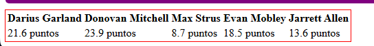
este código aplica un contorno rojo de 1 píxel alrededor del elemento seleccionado. El outline es similar al borde pero no ocupa espacio en el diseño y se dibuja sobre el elemento.
Selector Tipo
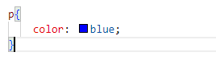
Resultado del Selector Tipo
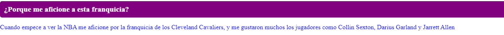
Pone de color azul el texto que esta en una etiqueta de parrafo P
Selector ID
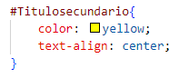
Resultado del Selector Tipo
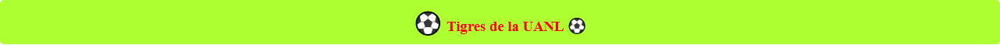
Aplicaría color amarillo y alinearía al centro el texto de cualquier elemento con id="Titulo Secundarios"
Selector Hermano General
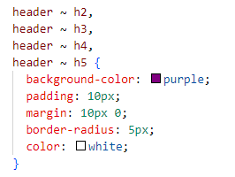
Resultado del Selector Descendiente
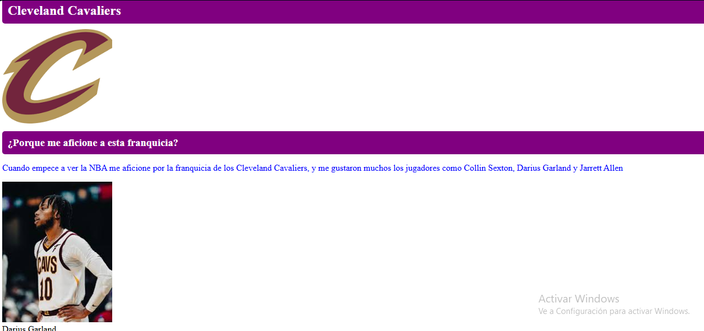
Este código CSS aplica un fondo morado y destacado a los subtítulos (h2, h3, h4, h5) que aparecen después de un , ideal para organizar contenido en secciones.
Selector Descendiente
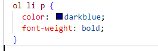
Resultado del Selector Descendiente
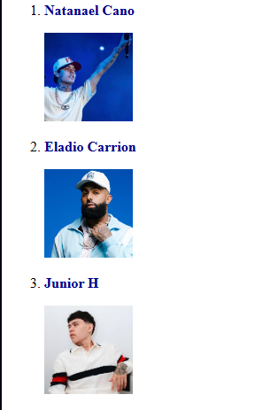
Texto azul oscuro + negrita a los párrafos dentro de ítems en listas numeradas.
Pseudoelementos
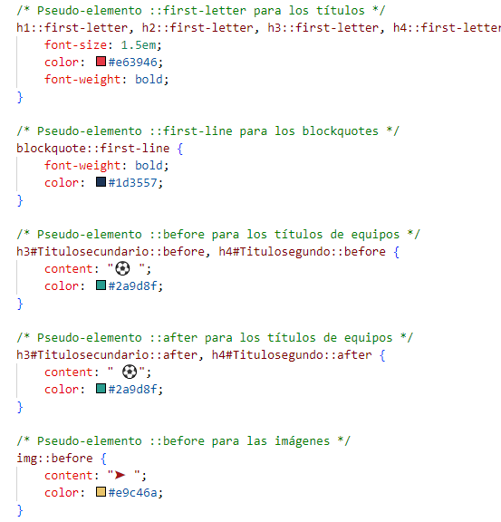
Resultado de Pseudoelementos
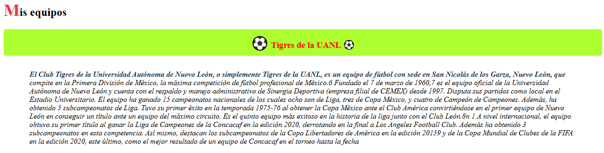
Destaca la primera letra de títulos en rojo y grande, pone en negrita la primera línea de citas, añade emojis a títulos específicos, e intenta (sin éxito) agregar íconos a imágenes.
Selector Hermano Adyascente
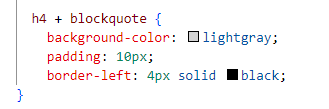
Resultado de Hermano Adyascente
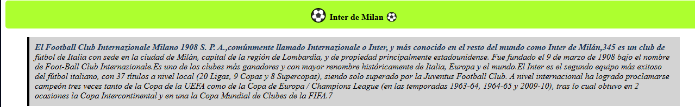
"Da estilo a blockquates que siguen inmediatamente a un h4: fondo gris claro, 10px de relleno y borde izquierdo negro de 4px.
Pseudoclases en el Formulario
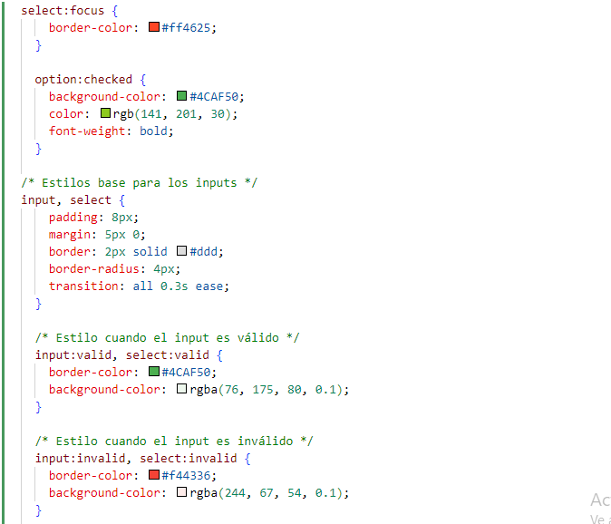
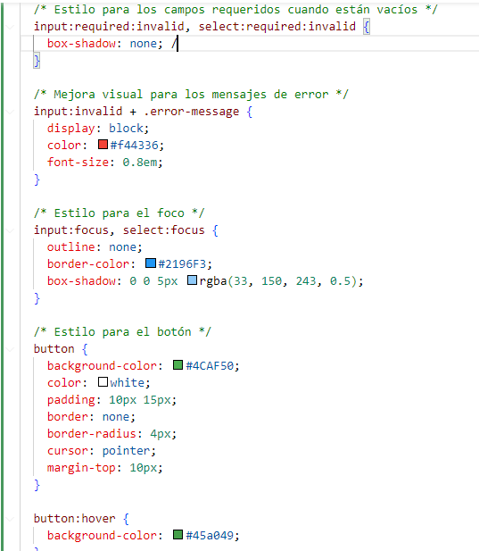
Resultado de Pseudoclases en el formulario
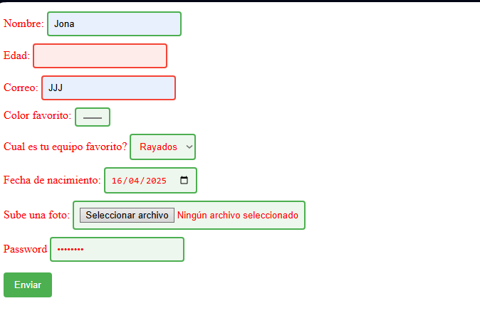
Este código le da estilo visual a formularios, especialmente a campos como ,